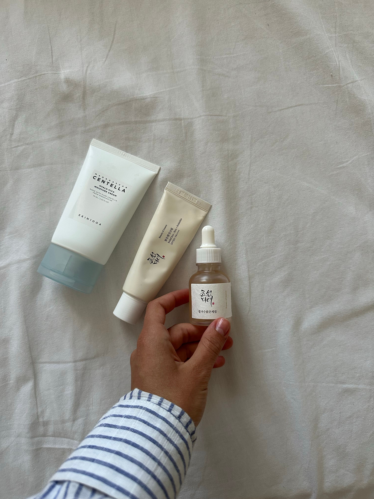
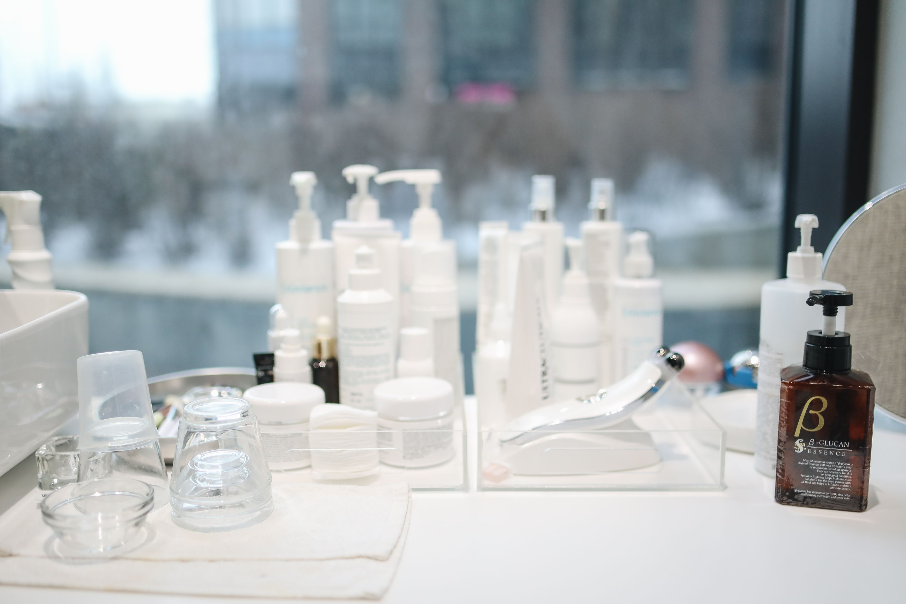

TU ESPACIO DE BELLEZA
Tu piel, tu momento
Descubre una forma sencilla de cuidar tu piel, aprende qué necesita y convierte tu rutina diaria en un momento de paz para ti.
Descubrir rutinas
BIENVENIDA A ASHLEY'S STUDIO
La belleza empieza en el cuidado.
No hace falta una rutina cara y extensa para cuidar tu piel. En Ashley's Studio, encontrarás información, consejos y recomendaciones para conocerla mejor.
EXPLORA Y DESCUBRE
Un espacio para tu piel
UN RECORDATORIO PARA TI
Cuidarte también es dedicarte tiempo.
Pequeños hábitos, momentos tranquilos, y cuidados sencillos
Leer consejos